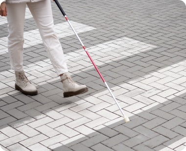

"남들과의 다름이
고통이 되지 않도록"
Scroll
후천적 장애인이란?
후천; 성질, 체질, 질환 따위와 관련하여, 태어난 뒤에 여러 가지 경험이나 지식에 의하여 지니게 된 것.
장애; 신체 기관이 본래의 제 기능을 하지 못하거나 정신 능력에 결함이 있는 상태.
후천적 장애인이란사고로 인해, 또는 어느순간 갑자기 장애를 얻게 된 사람을 말합니다. 이러한 장애는
질병, 사고, 싱처, 중독, 노화 등으로 인해 발생할 수 있으며, 전체 장애인의 88%의 비율을 차지합니다.
지체 장애인

시각 장애인
청각 장애인
매 해 늘어나는
후천적 장애인의 수
2020년 장애 실태 조사. 장애 등록 현황. 보건복지부
보건복지부의 통계에 따르면, 2020년에 새롭게 등록한 장애인은 8만3천명이며,
2019년에 비해 만 2천명이 증가했다고 발표하였습니다. 이 통계를 토대로 매 해 사고나
질환으로 장애가 발생하고, 재활을 진행하는 숫자가 늘고 있다는 것을 알 수 있습니다.
하지만 그들을 위한
심리적 재활은 늘어나지 않는다.
이상준 원장, 인수영. 자아존중감과 우울이 지체 중도장애인의 장애 수용에 미치는 영향. 동신대학교
2022년 한국보건사회연구원 복지패널조사
여러 조사를 통해 알게 된 후천적 장애인들은 우울증 발생률이 높고 사회에 대한 적응도가 낮았습니다. 또한, 공통적으로 상실감을
안고 살고 있었습니다. 그러나
한국보건사회연구원 조사에 따르면 전체 장애인구중 99.8%는 심리재활을 경험해보지 못했다고 답했습니다. 이처럼
후천적 장애인들은 큰 심리적 충격을 안고 살아가지만, 그들을
위한 심리적 재활은 아직 부진한 것이 현실입니다. 그래서 지금까지도 대부분의
후천적
장애인들은 불안감과 상실감을 가지고, 홀로 사회에 적응하려 애쓰고 있습니다.
왜
후천적 장애인들을 위한
전문 멘탈케어 서비스는 없을까?
이렇게 우리의 사용자들은 상담을 해주고, 마음을 케어하는 서비스를 필요로 하고 있다. 그런데 재활 치료의 과정이나,
앱 서비스에서 이런 점들을 돌봐주지 않고 있다. 대부분의 사람들은 이미 있는 서비스에서 충분히 케어를 해주고 있다고 생각하고
있고, 이런 서비스가 추가로 필요하지 않을거라 생각한다.
section2
section3
section4
section5
section6


메인 화면
This is the content for circle 1
온라인 전문 상담
This is the content for circle 1
다양한 챌린지
This is the content for circle 1
화분키우기
This is the content for circle 1